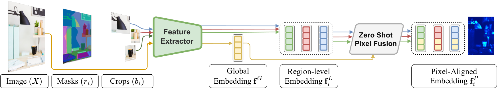
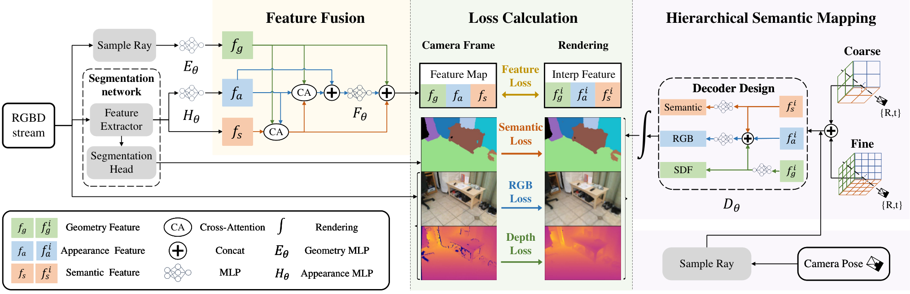
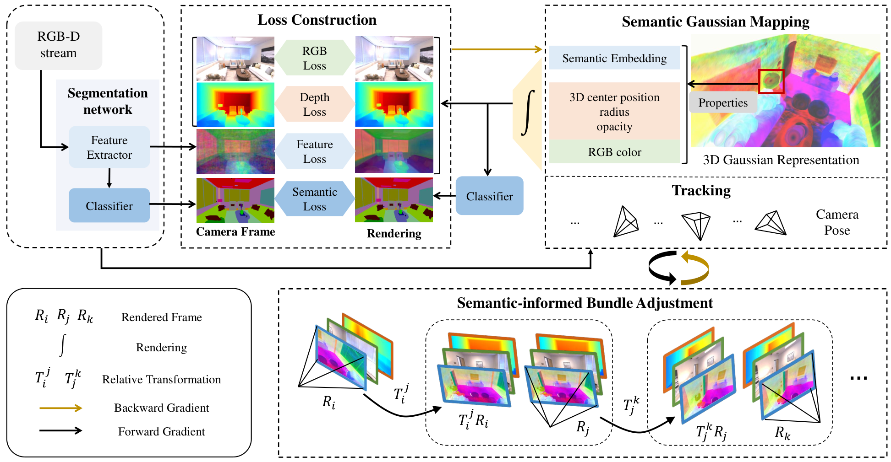
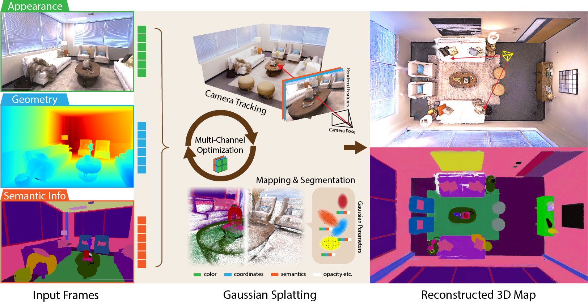

Paper Analysis
01 · Scope and Reading Versions
这四篇是用户指定的基础文献，不作为近期新论文介绍。它们多数使用 RGB-D 和逐场景在线优化，而 LingBot-Map 的迁移目标是学习式 RGB 流式重建。可以借鉴监督机制，不能直接照搬输入条件、速度或精度。
这里区分三个问题：输出是否有语义；语义损失是否改变几何预测；有限历史状态是否因语义监督而更有用。三个问题需要不同对照实验。
| Work | First Submission | Read Version | Core Setting |
|---|---|---|---|
| ConceptFusion | 2023-02-14 | 2302.07241v3 | RGB-D feature fusion |
| SNI-SLAM | 2023-11-18 | 2311.11016v3 | RGB-D implicit mapping |
| SemGauss-SLAM | 2024-03-12 | 2403.07494v4 | RGB-D Gaussian mapping and BA |
| SGS-SLAM | 2024-02-05 | 2402.03246v6 | RGB-D semantic tracking and mapping |
Paper Analysis
02 · ConceptFusion: Features Attached to Geometry

Krishna Murthy Jatavallabhula et al. · Original figure, unmodified · CC BY-SA 4.0 · Paper & Caption ↗
沿原图，先对当前 RGB 提取全图及区域 CLIP 特征，再把区域信息组合成像素对齐特征。类别无关分割提供区域，而不是先限定一组类别再分类。全局特征保留上下文，局部特征提供较细的区域区别；区域重叠时还需要融合与归一化。
之后依赖深度、相机位姿和几何一致性，将当前像素对应到地图点，融合颜色与语义向量。公式中的 c 是历史融合权重，α 是当前观测权重。这里的空间对应先由几何建立，语义向量不是直接拿来替代相机变换。
文本查询编码到同一特征空间后，可以检索三维区域。它说明如何得到开放词汇地图，但没有通过训练语义 loss 改善几何。它适合作为“已有几何上附加语义”的对照。
f_new = (c_old · f_old + α · f_pixel) / (c_old + α)
Paper Analysis
03 · ConceptFusion: Evidence and Computational Boundary
UnCoCo 的 structured text query 评测中，ConceptFusion 的 3D mIoU 为 0.378，LSeg-3D 为 0.122，OpenSeg 为 0.153。这是语义检索与分割指标，不能解读为重建误差下降。数据集包含 20 段 RGB-D 序列、78 个物体，其中 2 段用于参数选择。
论文的基础建图速度与语义特征提取开销分开报告；离线特征提取约需 10–15 秒/图（RTX 3090）。不能只摘建图帧率，把整个语义系统说成实时。稠密高维特征也会增加地图内存。
Paper Analysis
04 · SNI-SLAM: Joint Features Do Not Imply Joint Gradients

Siting Zhu et al. · Original figure, unmodified · Copyright retained; arXiv non-exclusive distribution license · Paper & Caption ↗
原图将几何、外观和语义特征放到统一融合过程：几何编码作为 query，外观作为 key，语义作为 value，通过交叉注意力产生融合信息。三维地图采用分层特征平面，解码颜色、语义和截断符号距离。DINOv2 用于视觉特征提取；它不是图文对齐的 VLM。
必须分清两个监督：语义分类使用交叉熵；特征级 L1 监督约束提取特征与地图插值得到的特征。论文明确对语义分类 loss 做梯度截断，避免其干扰几何和外观。因此，“SNI-SLAM 证明语义交叉熵直接改善几何”是不准确的。
特征融合和特征级监督可以改变共享表示的学习，但不能把整个系统收益都归到语义 CE。符号 f_extract 表示提取并融合的目标特征，f_interp 表示地图插值得到的特征。
L_feature = ||f_extract − f_interp||₁
Paper Analysis
05 · SNI-SLAM: Reading the Ablation Correctly
Table 6 在 Replica office0 上逐项加入模块，报告的轨迹 RMSE从 0.83 cm 降至 0.33 cm，mIoU 从 71.5 升至 86.0。这个表是单场景的累积消融，不是每个组件分别相对完整系统移除的独立消融。
从加入分层语义地图后的 0.55 cm / 84.1，到再加入特征 loss 的 0.47 cm / 85.0，可以看到该设置下特征级监督的关联收益；后续还加入解码器与融合模块。不能由最终数值反推出分类损失的单独作用。
| Office0 Setting | Trajectory RMSE (cm) ↓ | mIoU (%) ↑ |
|---|---|---|
| SR | 0.83 | 71.5 |
| + HSM | 0.55 | 84.1 |
| + Feature Loss | 0.47 | 85.0 |
| + Decoder | 0.43 | 85.3 |
| + Fusion | 0.33 | 86.0 |
Paper Analysis
06 · SemGauss-SLAM: Where Semantics Reaches Geometry

Siting Zhu et al. · Original figure, unmodified · Copyright retained; arXiv non-exclusive distribution license · Paper & Caption ↗
原图先从 RGB-D 建立带语义向量的高斯地图。冻结 DINOv2 提供密集视觉特征目标，渲染特征与目标做 L1 对齐，语义解码器再预测标签。地图优化还包含 RGB、深度和语义分类监督。
关键连接出现在 semantic-informed bundle adjustment：把共同可见关键帧中的语义渲染，利用深度和相机变换重投影到另一视图，对齐同一表面的语义，并联合调整地图与位姿。变换作用于三维点和采样位置，不是把旋转矩阵直接乘到语义向量上。
常规 tracking 使用 RGB 与深度残差，不能笼统地说每个跟踪步骤都有语义 loss。语义特征蒸馏与语义 BA 是两个不同机制。
Paper Analysis
07 · SemGauss-SLAM: A Useful Negative Result
Table V 的 room0 消融很适合回答本研究问题：移除 feature loss，mIoU 从 92.81 降到 83.60，但 ATE 和深度误差仍是 0.26 cm 与 0.54 cm。这个对照不支持“更强的特征监督自动带来更好几何”。
Table VI 移除语义 BA 后，room0 的 ATE/Depth L1 为 0.35/0.66 cm，完整系统为 0.26/0.54 cm。这里才提供了该优化设置下语义跨视图约束与几何收益的证据。它不保证 RGB-only 前馈模型也有同样收益。
| Room0 Setting | ATE (cm) ↓ | Depth L1 (cm) ↓ | mIoU (%) ↑ |
|---|---|---|---|
| Full | 0.26 | 0.54 | 92.81 |
| Without Feature Loss · Table V | 0.26 | 0.54 | 83.60 |
| Without Semantic BA · Table VI | 0.35 | 0.66 | 90.15 |
Paper Analysis
08 · SGS-SLAM: Semantic Rendering Residuals

Mingrui Li et al. · Original figure, unmodified · CC BY-SA 4.0 · Paper & Caption ↗
沿原图，高斯同时保存颜色、几何与语义颜色，按相同的可见性和混合权重渲染 RGB、深度与语义图。这里的语义颜色是标签表示，不是开放词汇 CLIP embedding。
跟踪时固定地图，用渲染与观测的残差调整位姿；建图时固定当前位姿，更新高斯参数。语义渲染误差能通过投影和混合权重关联到几何，因而比“在固定地图上训练分类头”更接近几何约束。
关键帧筛选同时考虑几何重叠与语义冗余：高语义重叠不一定意味着应优先保留，也可能意味着重复。这个选择策略与语义 loss 都会影响最终系统表现，需要分别消融。
Paper Analysis
09 · SGS-SLAM: What the Numbers Support
Table 4 在 ScanNet scene0000_00 上，移除语义通道后 Depth L1 为 9.15 cm、ATE 为 13.81 cm；完整系统为 6.18 cm、11.26 cm。相同表里移除深度通道会显著恶化，说明语义并不能取代几何证据。
Table 5 移除语义关键帧筛选阈值后，深度误差为 8.44 cm、ATE 为 12.89 cm。系统收益不应全部归因于一种 loss。报告的 Replica SLAM 速度为 2.11 FPS，快速高斯渲染不等于整个在线优化系统达到视频帧率。
这些实验依赖语义标签与 RGB-D 条件。迁移时应把标签质量、额外深度输入、在线优化和计算预算一起列出来，不能直接把不同论文的误差拼成排行榜。
Research Proposal
10 · Proposed Baseline: Supervise the Shared Streaming State
建议保留 LingBot-Map 的图像编码、几何上下文和原有几何输出，在历史交互后的共享特征 h_t 上接一个小的密集语义投影 P。它与原来的深度、位姿预测共用特征，不再额外构建一个完整重建网络。
训练时，冻结的密集语言对齐教师 T 为当前 RGB 产生像素级目标 s*_t。可以选 LSeg 等能输出密集语言特征的模型；普通 CLIP 的单个全图向量没有足够像素定位能力。DINOv2 可以作为视觉特征对照，但不能称为 VLM 语义教师。
对归一化预测与教师特征施加余弦蒸馏 loss。m 是可靠像素权重，排除无效或明显不确定区域；教师目标不回传梯度。保留原几何监督，先训练共享上下文层的轻量适配器与语义头，再根据稳定性扩大可训练范围。
关键是语义梯度能到达几何预测使用的共享特征。如果整个 backbone 冻结，只训练一个输出头，几何结果不会因为这个头学会分类就自动改变。这里得到的是共享表示层面的间接约束，不是每个语义像素都直接优化了深度。
h_t, M_t = StreamingBackbone(I_t, M_{t−1})
s*_t = stopgrad(T(I_t))
L_sem = Σ_u m_u [1 − cos(P(h_t(u)), s*_t(u))] / (Σ_u m_u + ε)
L = L_geometry + λ_sem L_semResearch Proposal
11 · Memory-Specific Supervision: Test Historical Readout
普通语义蒸馏已经是常见方法，不能仅换一个 backbone 就宣称新的记忆机制。更值得单独检验的是：压缩历史状态后，还能否恢复对之后预测有用的表面语义？
一个候选辅助任务是在训练片段内，选择已经离开局部窗口的历史帧 j。仅提供视点/射线和采样位置作为读取地址，从当前保留的历史状态读取该区域的低分辨率语义目标；必要时同时读出几何量。读取时不提供旧 RGB 或旧密集 token，避免任务绕过真正的记忆瓶颈。
这个任务需要训练时展开写入与读取过程，让梯度穿过可训练的状态更新；直接复用已 detach 的推理缓存不会训练到过去的写入。可先用截断反向传播控制成本，并从少量区域而非整幅高分辨率语义图开始。
必须用空记忆、打乱历史、去掉旧帧等对照检查模型是否只靠当前图像或类别先验猜答案。LingBot-Map 原始历史状态也不能未经核对就说成严格固定总内存；第一版先保持同一缓存配置与序列长度比较。只有后续几何也改善，才支持“语义监督改善记忆”的主张。
ŝ_j = Read(M_t, address_j), j outside the local window L_memory = distance(ŝ_j, stopgrad(s*_j)) L_total = L_geometry + λ_sem L_sem + λ_mem L_memory
Research Proposal
12 · Optional Direct Coupling Through Reprojection
如果需要检验语义如何直接作用到深度和位姿，可以单独增加跨视图特征重投影 loss。当前像素通过预测深度反投影成三维点，再用预测相机变换投到历史图像，以可微采样读取冻结教师的特征。即使教师冻结，采样位置仍对预测深度和位姿可导。
这里的 K 是内参，D 是深度，T 是坐标变换，π 是透视投影。损失只在可见、可靠、几何上合理的对应范围内计算；遮挡掩码应避免通过减少有效像素来“降低损失”。
这不是同类物体之间随意拉近特征，更不是把同一实例压成平面。语义均匀区域可能没有足够匹配梯度，重复物体也会造成错误极小值。它应与原几何监督结合，作为独立增量实验，不必第一版同时加入所有机制。
u′ = π(T_{t→j} · [D_t(u) K⁻¹ ū])
L_reproj = mean_valid [1 − cos(s*_t(u), sample(s*_j, u′))]Research Proposal
13 · Training, Inference, and Outputs
训练在离线连续片段上进行：准备几何监督和冻结教师特征，联合训练共享上下文适配器、语义投影及可选历史读取任务。先以原模型相同数据和训练预算做微调对照，再加入语义，避免把额外训练收益误认为语义收益。
部署仍是因果的在线流式推理：当前 RGB 加历史状态，输出当前几何、位姿/置信信息和语义向量。教师不需要在线运行；辅助训练读取头可在推理时移除。完整端到端延迟仍需测量，不能预先保证无开销。
累计输出可以是带语义向量的点图或点云；与文本 embedding 比较后可得到开放词汇区域。实例分割还需要实例区分与跨帧关联，不能从类别语义自然推出。当前阶段不承诺动态分解、物体完整补全或超越 iGGT4D。
Synthesis
14 · Connections to Earlier Reading
这些联系是研究启发，不能当作各论文都已经证明了我们的假设。最有用的共同问题是：哪个观测形成状态、状态丢掉了什么，以及之后怎样检查它是否仍有用。
SLARM 借鉴的是语言特征的监督与输出；具体配置是否截断几何梯度仍应沿实现复核。Slot3R、Ray-Aware Memory 借鉴的是寻址与更新的几何约束；语义应补充这些条件，不应取代它们。
| Previous Reading | Useful Connection | Boundary |
|---|---|---|
| VGGT / StreamVGGT | 保留几何基座，分清批量与因果上下文 | 额外语义必须与同预算微调比较 |
| CUT3R / LingBot-Map | 把监督加到承载历史的共享状态 | 状态有语义不等于历史被有效使用 |
| SLARM | 密集语言监督与重建输出共同建模 | 语义分支与几何梯度连接需核对 |
| Slot3R / Ray-Aware Memory | 可靠寻址、几何可见性与更新机制 | 同类语义不代表同一表面 |
| SpatialSpeak | 设计可读出的任务目标检查表示 | 空间语言能力不直接等于重建精度 |
| Totem | 稳定表面地址帮助跨视图保持身份 | 生成一致性不等于真实几何恢复 |
| SMoRe / Ledger | 区分保存历史、修订历史与实例身份 | 先验证当前 loss，不同时扩张全部任务 |
Research Proposal
15 · Minimum Experiments and Falsifiable Claims
第一阶段的有效结果是：相同数据、缓存、优化步数和近似参数量下，共享语义监督相对匹配微调基线改善几何，并且不靠删掉困难点换取表面干净。应同时报告几何精度、完整度、位姿、边界区域和跨帧一致性，以及语义质量与计算开销。
第二阶段才验证历史读取任务：在长序列、遮挡后再观察等一般情形下，加入记忆辅助 loss 是否优于仅当前帧蒸馏。随机或空记忆若同样有效，说明机制可能没有真正利用历史。
需要加入同尺寸视觉教师特征监督对照，判断收益来自语言语义还是一般额外监督。所有模块的权重、可训练参数、教师成本、总缓存量都应报告。若语义只改善分割、几何无变化，应如实保留这个结论。
| Variant | What Changes | What It Tests |
|---|---|---|
| A · Matched Fine-Tuning | 仅原始几何 loss | 排除额外训练本身的收益 |
| B · Detached Semantic Head | 共享特征 detach，仅语义头学习 | 只增加输出是否影响几何 |
| C · Shared Semantic Supervision | 语义梯度进入共享上下文 | 语义监督是否改善共享表示 |
| D · C + Historical Readout | 训练压缩后的历史可读性 | memory 特异性收益 |
| E · C + Reprojection | 几何变量决定跨视图采样 | 直接几何约束的增量作用 |
| F · Visual Feature Control | 匹配维度与预算的非语言教师 | 语言语义与一般监督的区别 |
Discussion
Reading Questions
Does a semantic loss necessarily improve geometry?
不一定。需要可用梯度路径与可靠监督；SemGauss-SLAM 的 feature-loss 消融就出现语义变化而几何不变。
What is the smallest useful implementation?
保留 LingBot-Map 的几何流程，在历史交互后的共享特征上加密集语义投影，保留几何 loss，并训练共享适配器。先比较匹配微调与 detach 对照。
Where could the research contribution lie?
当前帧语义蒸馏本身不新。候选贡献是对压缩历史施加可检验的语义读取监督，并证明它在相同缓存预算下改善后续几何；目前仍是待验证假设。
Is the model online or offline?
离线训练，在线因果推理。训练教师和辅助任务不要求部署时在线优化，也不允许推理访问未来帧。
References
- ConceptFusion · 2302.07241v3 ↗
- SNI-SLAM · 2311.11016v3 ↗
- SemGauss-SLAM · 2403.07494v4 ↗
- SGS-SLAM · 2402.03246v6 ↗
- LingBot-Map ↗
- SLARM · Earlier Note ↗
- Ray-Aware Pointer Memory · Earlier Note ↗
- Slot3R · Earlier Note ↗
- SpatialSpeak · Earlier Note ↗
- Totem · Earlier Note ↗
- SMoRe · Earlier Note ↗
- Ledger · Earlier Note ↗
Four original figures are reproduced for focused scholarly commentary. Original copyright is retained. ConceptFusion and SGS-SLAM figures retain their CC BY-SA 4.0 licenses; SNI-SLAM and SemGauss-SLAM use the arXiv non-exclusive distribution license, which is not a general reuse license. No new license is asserted for those figures. This note is based on paper reading; implementation gradient paths require a separate code audit.
Verified on 2026-10-19. Paper results refer to the linked versions. Repository references were checked on this date.